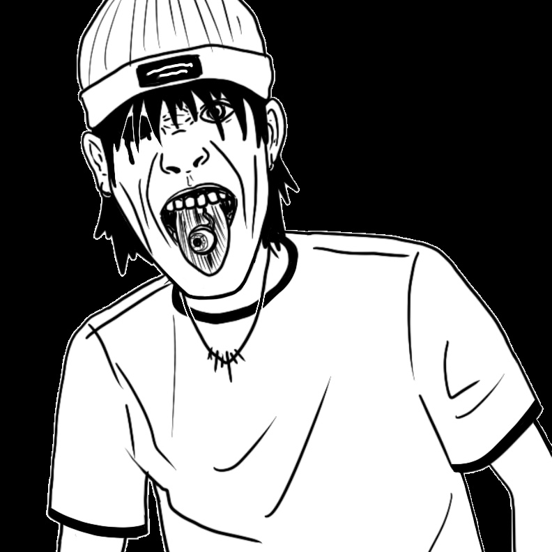
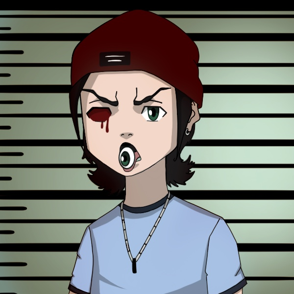

In this project, I gave an old character sketch new life—100 new lives, that is. This select sample of portraits provides a sneak peek of the wide range of video games, animated shows, specific artists and classic art styles I used to inform each rendition. Left to right, starting from the top row: my original character, Tearaway, Attack on Titan, Don’t Starve, cel-shading, The Boondocks, notebook doodle, Castlevania